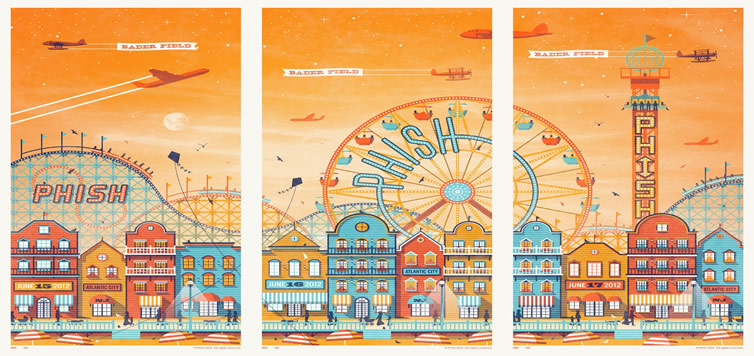

The History On January 26, 1989, Phish played the Paradise Rock Club in Boston. The owners of the club had never heard of Phish and refused to book them, so the band rented the club for the night. The show sold out due to the caravan of fans that had traveled to see the band.
By late 1990, Phish's concerts were becoming more and more intricate, often making a consistent effort to involve the audience in the performance. In a special "secret language," the audience would react in a certain manner based on a particular musical cue from the band. For instance, if Anastasio "teased" a motif from The Simpsons theme song, the audience would yell, "D'oh!" in imitation of Homer Simpson. In 1992, Phish introduced collaboration between audience and band called the "Big Ball Jam" in which each band member would throw a large beach ball into the audience and play a note each time his ball was hit. In so doing, the audience was helping to create an original composition.
In an experiment known as "The Rotation Jam," each member would switch instruments with the musician on his left. On occasion, a performance of "You Enjoy Myself" involved Gordon and Anastasio performing synchronized maneuvers on mini-trampolines while playing their instruments.
Phish, along with Bob Dylan, the Grateful Dead, and The Beatles, was one of the first bands to have a Usenet newsgroup, rec.music.phish, which launched in 1991. Aware of the band's growing popularity, Elektra Records signed them that year. The following year A Picture of Nectar was complete: their first major studio release, enjoying far more extensive production than either 1988's Junta or 1990's Lawn Boy. These albums were eventually re-released on Elektra, as well.
The first annual H.O.R.D.E. festival in 1992 provided Phish with their first national tour of major amphitheaters. The lineup, among others, included Phish, Blues Traveler, The Spin Doctors, and Widespread Panic. That summer, the band toured Europe with the Violent Femmes and later toured Europe and the U.S. with Carlos Santana.
| Home | Band Members | History | Popular Discography | Live |
The Story Behind the Band

On January 26, 1989, Phish played the Paradise Rock Club in Boston. The owners of the club had never heard of Phish and refused to book them, so the band rented the club for the night. The show sold out due to the caravan of fans that had traveled to see the band. By late 1990, Phish's concerts were becoming more and more intricate, often making a consistent effort to involve the audience in the performance. In a special "secret language," the audience would react in a certain manner based on a particular musical cue from the band. For instance, if Anastasio "teased" a motif from The Simpsons theme song, the audience would yell, "D'oh!" in imitation of Homer Simpson. In 1992, Phish introduced collaboration between audience and band called the "Big Ball Jam" in which each band member would throw a large beach ball into the audience and play a note each time his ball was hit. In so doing, the audience was helping to create an original composition. In an experiment known as "The Rotation Jam," each member would switch instruments with the musician on his left. On occasion, a performance of "You Enjoy Myself" involved Gordon and Anastasio performing synchronized maneuvers on mini-trampolines while playing their instruments. Phish, along with Bob Dylan, the Grateful Dead, and The Beatles, was one of the first bands to have a Usenet newsgroup, rec.music.phish, which launched in 1991. Aware of the band's growing popularity, Elektra Records signed them that year. The following year A Picture of Nectar was complete: their first major studio release, enjoying far more extensive production than either 1988's Junta or 1990's Lawn Boy. These albums were eventually re-released on Elektra, as well. The first annual H.O.R.D.E. festival in 1992 provided Phish with their first national tour of major amphitheaters. The lineup, among others, included Phish, Blues Traveler, The Spin Doctors, and Widespread Panic. That summer, the band toured Europe with the Violent Femmes and later toured Europe and the U.S. with Carlos Santana.